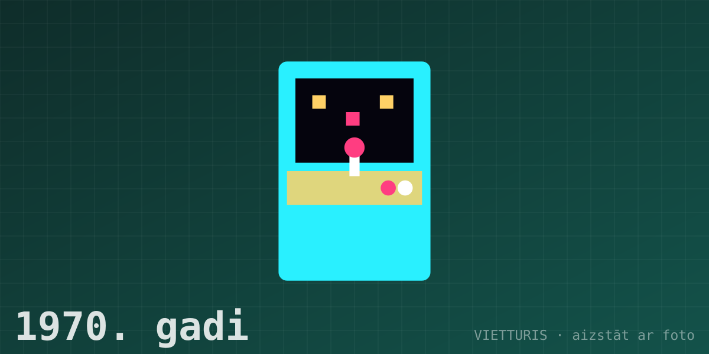
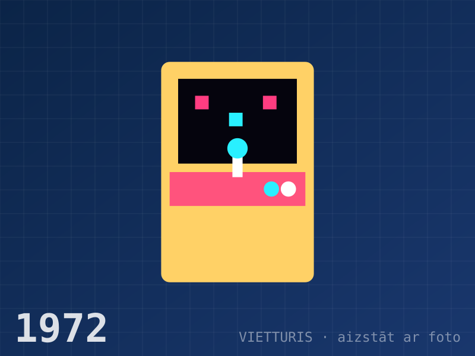
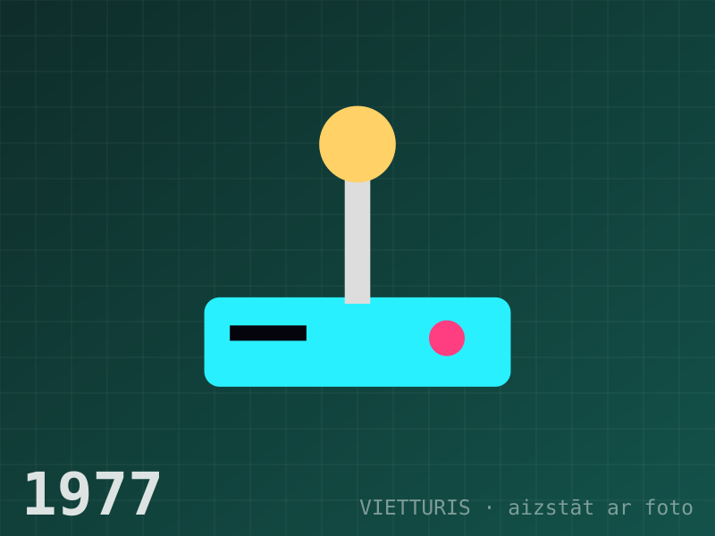
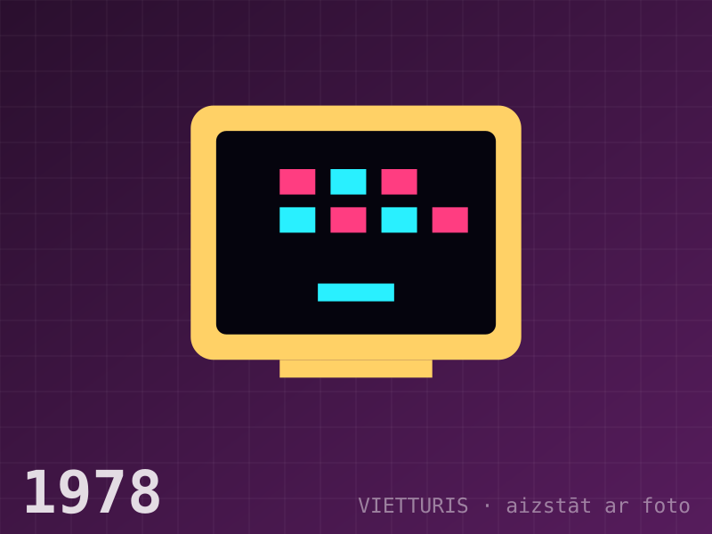
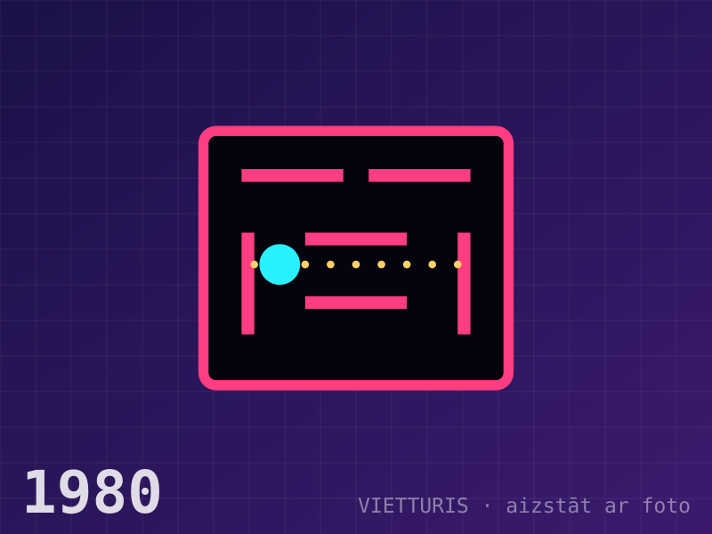
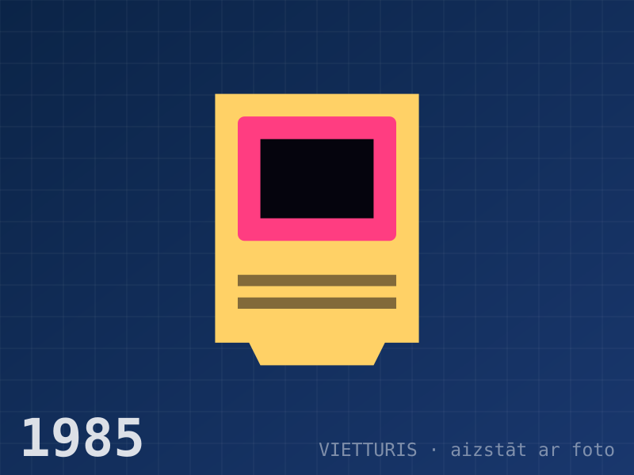
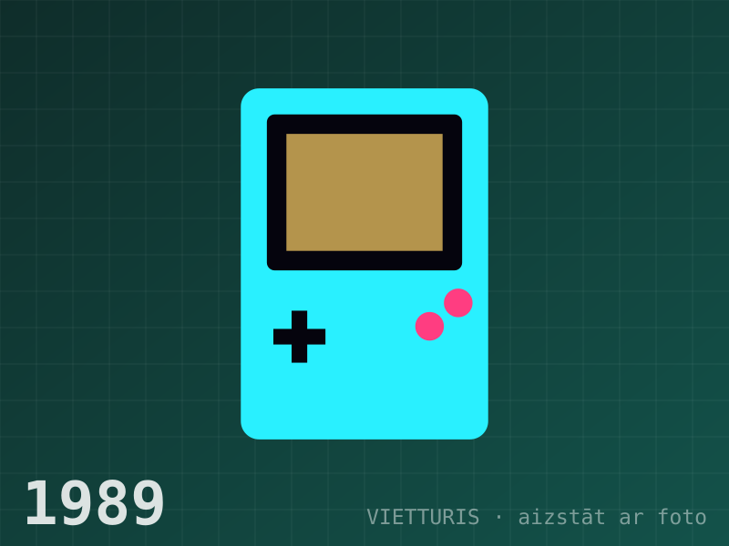
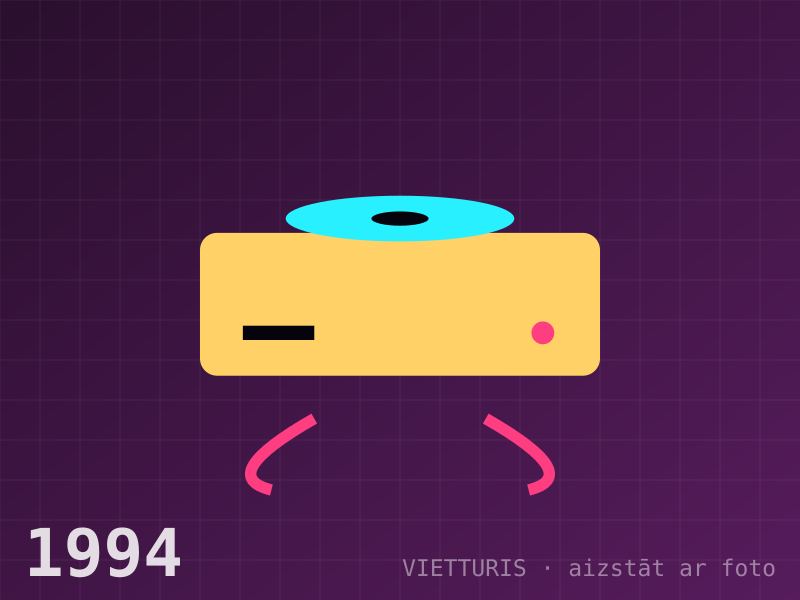
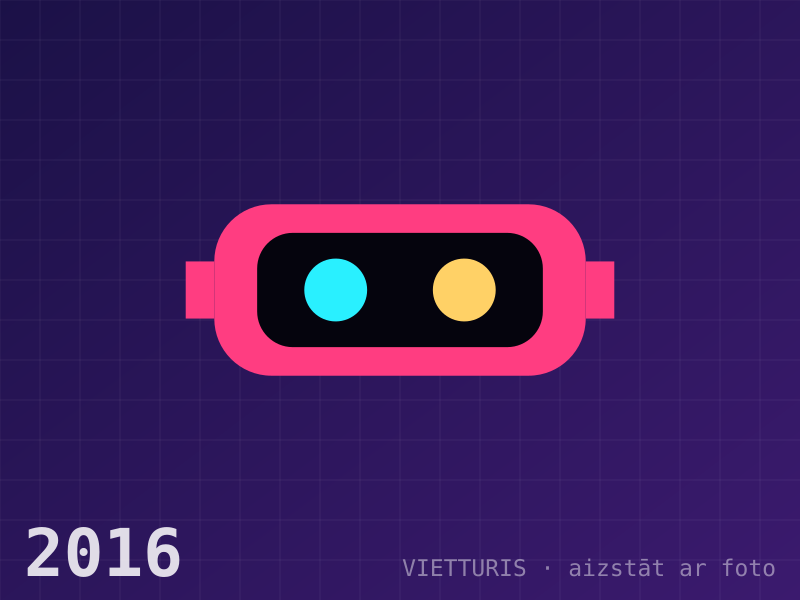

Izstādes mērķis
Izstādes mērķis ir parādīt, kā videospēles no vienkāršām pikseļu rotaļām kļuva par vienu no lielākajām izklaides nozarēm pasaulē, un iepazīstināt apmeklētājus ar svarīgākajiem pavērsieniem.
Virtuālā izstāde
Ceļojums no pirmajiem arkādes automātiem līdz virtuālās realitātes brillēm – pieci gadu desmiti spēļu, kas mainīja izklaidi un tehnoloģijas.
Apskatīt izstādi ▶
Izstādes mērķis ir parādīt, kā videospēles no vienkāršām pikseļu rotaļām kļuva par vienu no lielākajām izklaides nozarēm pasaulē, un iepazīstināt apmeklētājus ar svarīgākajiem pavērsieniem.
Pirmie komerciālie arkādes automāti parādījās 1970. gadu sākumā. 1980. gados mājas konsoles un kasetes ienāca dzīvojamās istabās, 1990. gados spēles kļuva trīsdimensiju, bet 2000. gadu sākumā tās pārcēlās uz internetu.
Šodien spēles spēlē mobilajos tālruņos, datoros, konsolēs un virtuālās realitātes brillēs. Tās ietekmē mākslu, mūziku, izglītību un sportu.
Astoņi izstādes eksponāti, kas ataino videospēļu attīstības posmus.

1970. gadu sākums – spēles publiskās vietās par monētu.

1977. gads – kursorsvira un spēles dzīvojamā istabā.

1978. gads – pirmie masveida arkādes hiti.

1980. gads – spēles ar tēlu un vienkāršu stāstu.

1985. gads – maināmas spēles mājas konsolēm.

1989. gads – spēles kabatā un ceļojumos.

1994. gads – 3D grafika un CD formāts.

2016. gads – spēles, kurās var "ieiet".
Pārlūkojiet videospēļu vēsturi pa gadu desmitiem.